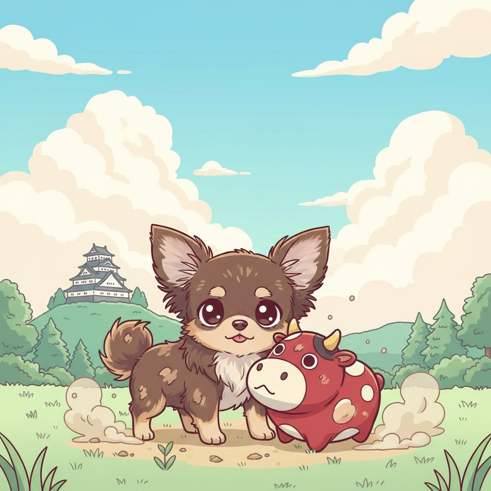
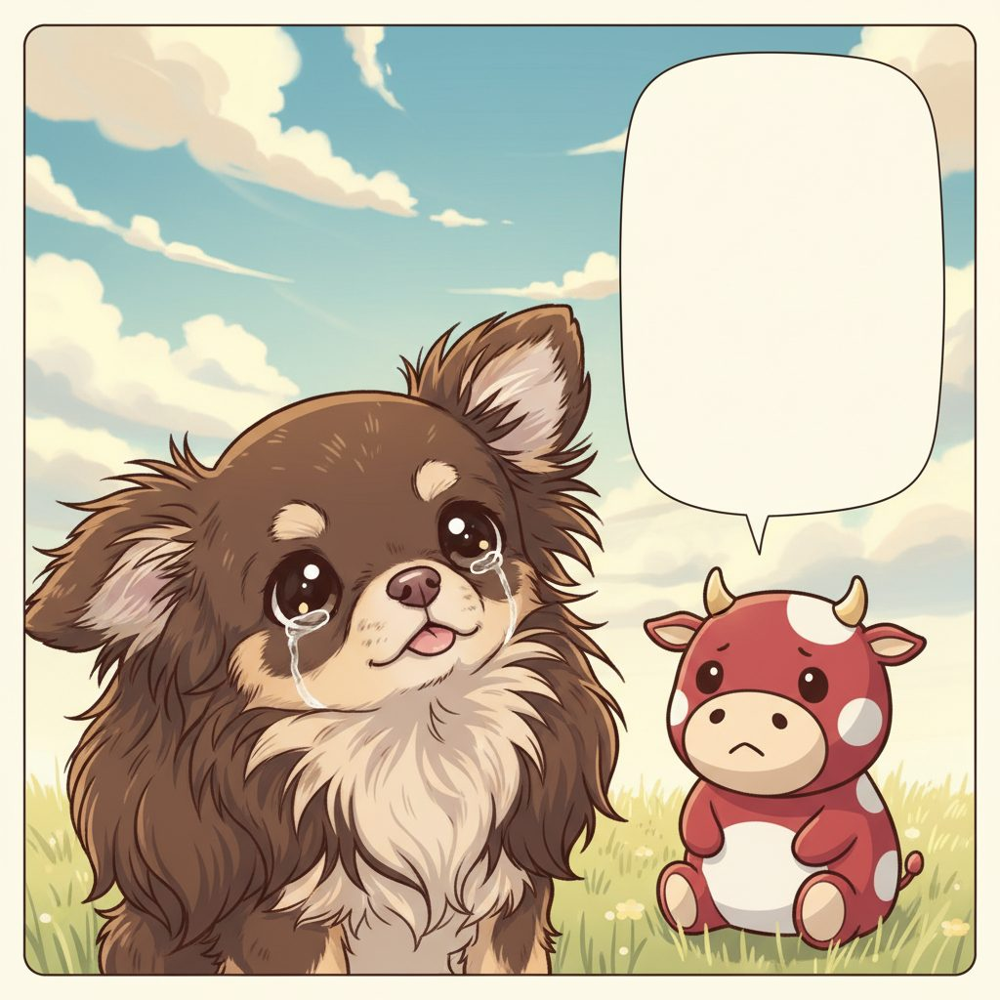
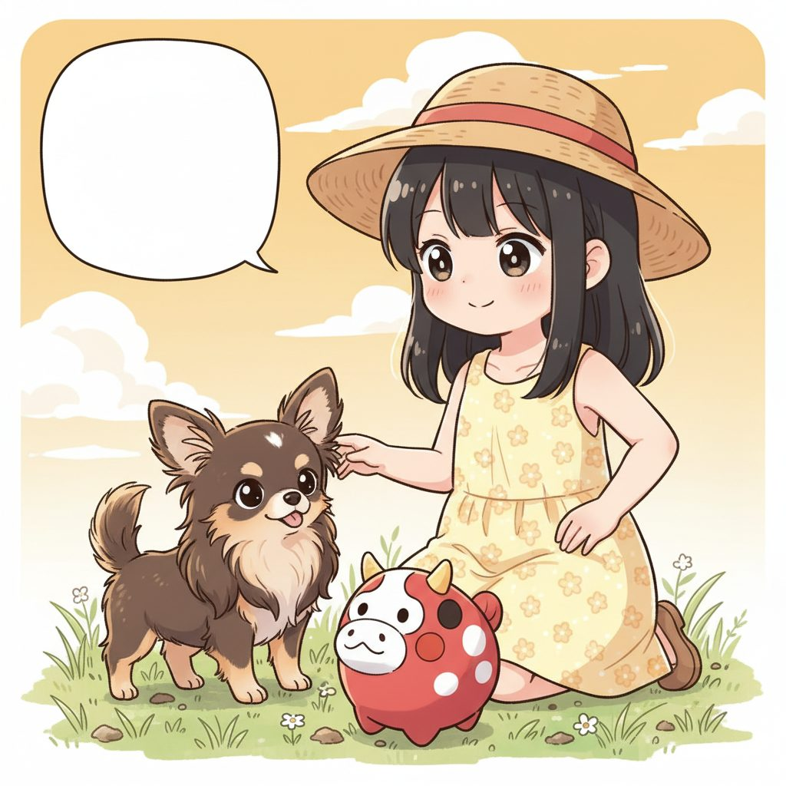
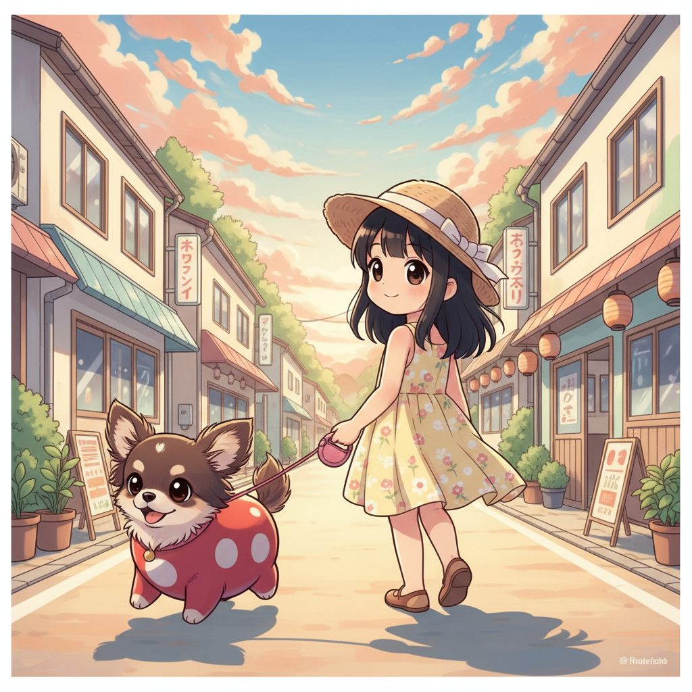
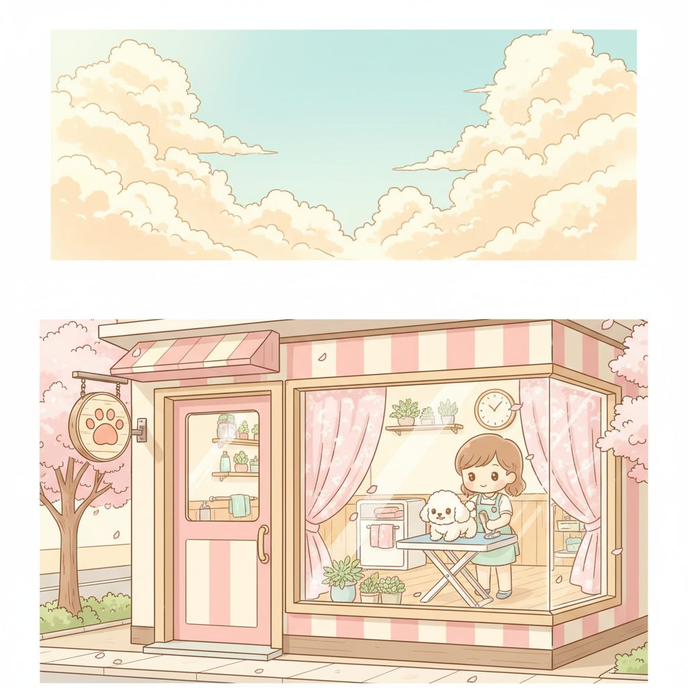
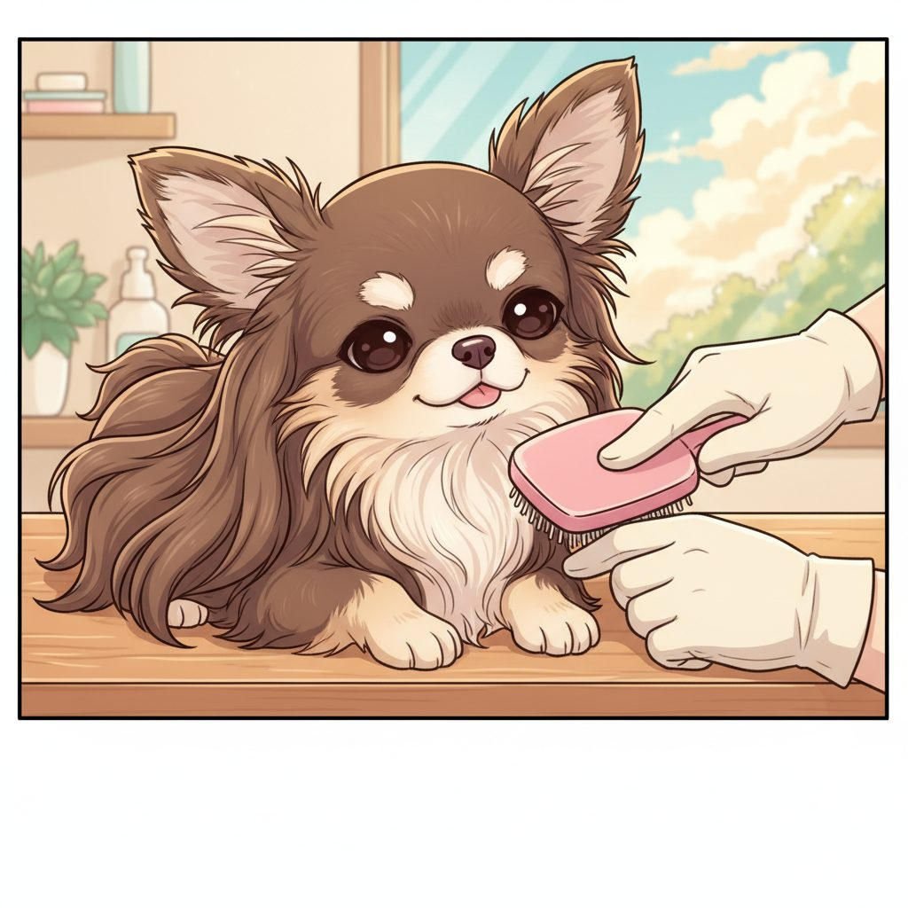
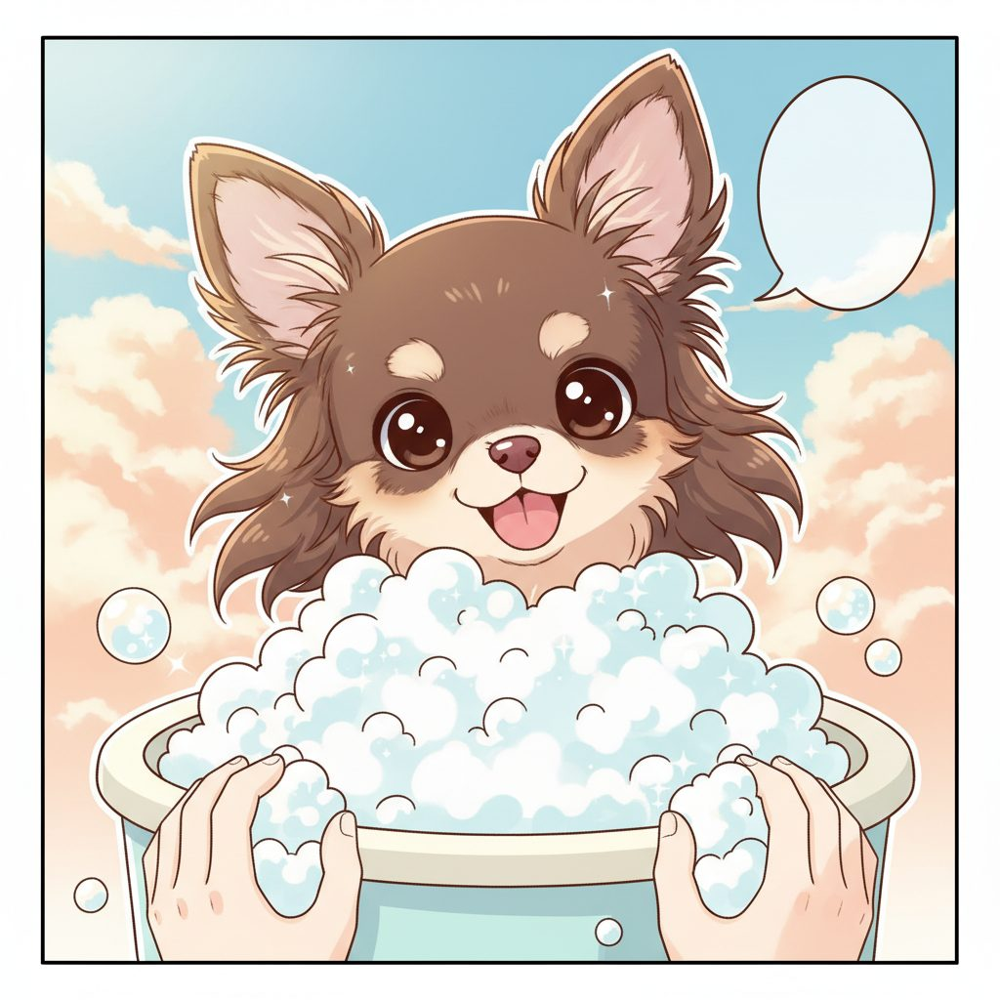
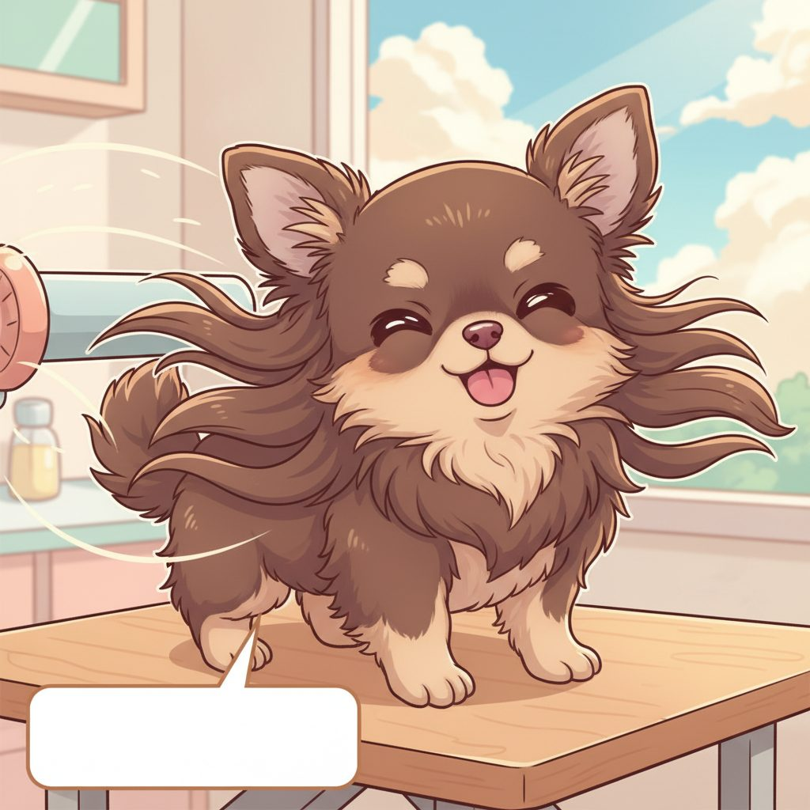
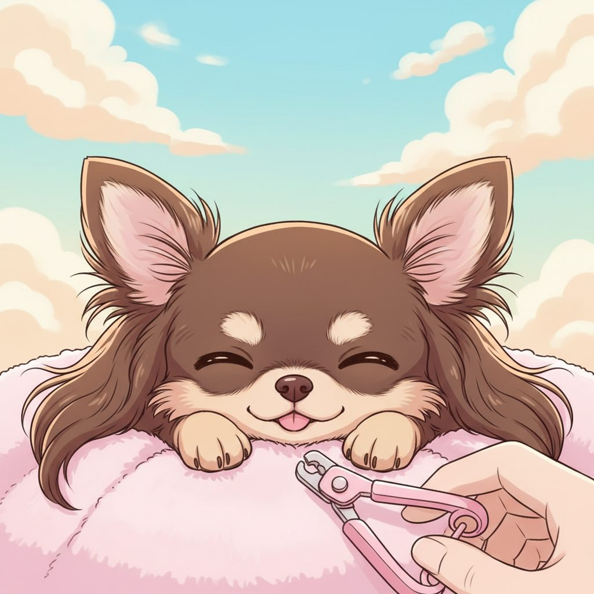
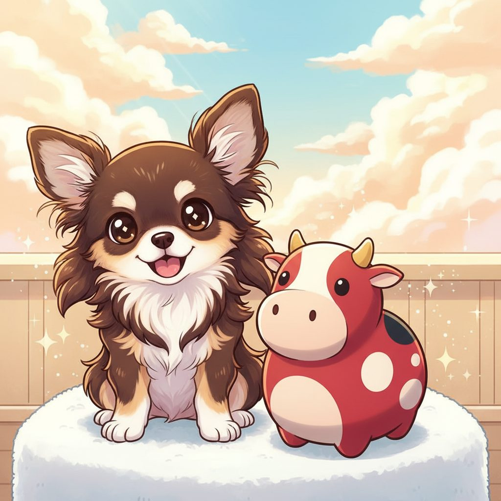
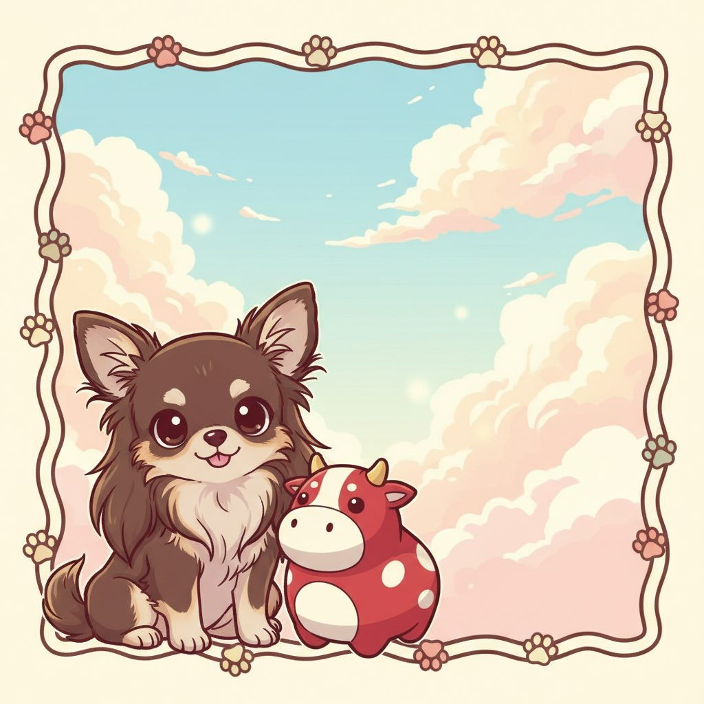
| @washdog_aizu | |
| TEL | 080-1830-9782 |
| 住所 | 福島県会津若松市山鹿町1-42 |
| 営業時間 | 9:00 - 18:00（土日祝も営業） |
| 遷移 | 動画タップ → Google Map |
※ このページはモックアップ確認用です。最終納品物は Lovart/Veo で動画化→ffmpeg合成した MP4 になります。画像は構成イメージのプレースホルダーで、実際の画像は次工程で生成します。